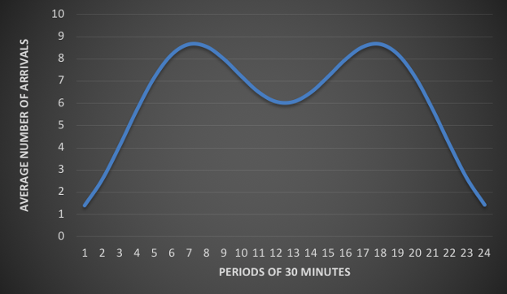

Creating the optimal working schedule for a call center
Jan 2018 ~ BSc Course "Project Business Analytics 1"
Length: 1mo (at 0.5 FTE)
Software: Microsoft Excel
Data: Mathematical function representing the service level over time, based on
the number and the duration of the calls, which are in turn composed of other functions
Problem description:
Provide a data-driven working schedule such that the service level is always above a certain level
and the number of employees is minimized
Approach & Results:
Implemented the given functions in Excel, derived other KPIs based on them, and created
visualizations for a better grasp of the number of arrivals over time.

Arranged shifts such that the service level condition is met, and the cost associated
with the number of employees is minimized with the help of Excel’s solver. Subsequently, it was discovered
that the call center could let go of 6.7% of its employees and still satisfy its desired service
level.